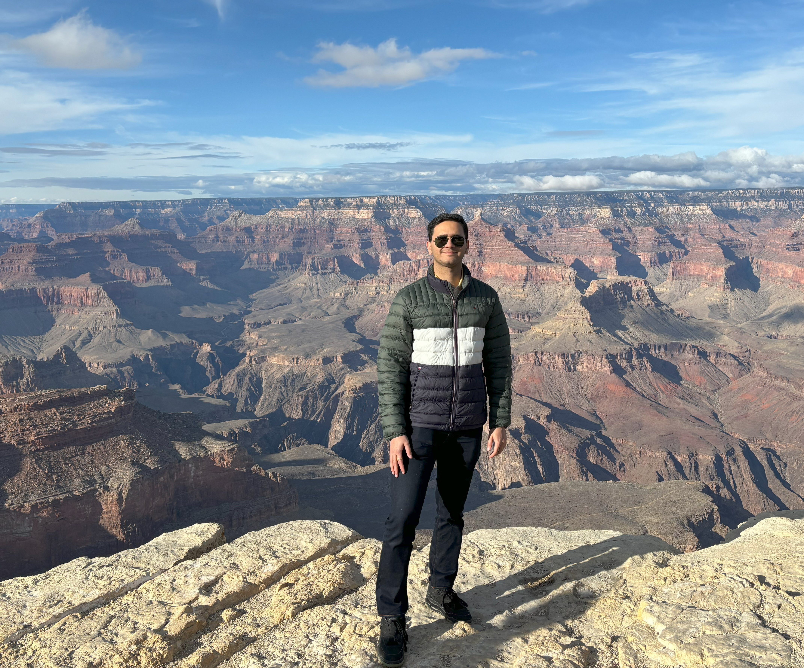

Welcome to Akshay Dhamsania's Personal Website
My name is Akshay Dhamsania, and I hail from Dallas, Texas. As a rising senior at Texas A&M University, my academic journey has been shaped by a deep commitment to computer science, complemented by a minor in statistics. Over the next decade, I envision myself at the forefront of academia and research, contributing significantly as a research scientist and professor in the realms of cybersecurity and statistics. My passion for technology extends beyond the classroom. I am an avid contributor to open-source software platforms, a pursuit that has not only honed my technical skills but also fostered a spirit of collaboration and innovation. This enthusiasm is mirrored in my diverse reading interests, ranging from cosmology and astrophysics to economics each field offering unique perspectives and complex problems that fuel my curiosity. My academic journey has been marked by active engagement in research. To date, I have participated in two fully-funded research projects, experiences that have been pivotal in shaping my research acumen and reinforcing my commitment to academic inquiry. As I approach the culmination of my undergraduate studies, I am eagerly seeking involvement in another research project, aiming to further broaden my experience and understanding of complex issues in my field. Looking ahead, my ambition is to pursue a Ph.D., a path I prefer over a traditional graduate program. This choice stems from my desire to delve deeper into research and contribute meaningfully to the body of knowledge in cybersecurity and statistics. The opportunity to engage in rigorous academic research, coupled with the potential to teach and mentor future generations, is a prospect that excites and motivates me. Flexibility and adaptability are traits that I hold in high regard, and they have been instrumental in my academic and personal growth. At the heart of my personality is an insatiable curiosity a single word that encapsulates my approach to learning and exploration. It is this curiosity that drives me to constantly seek new knowledge, challenge existing paradigms, and aspire to be a catalyst for innovation in my chosen fields. In conclusion, my background and interests align seamlessly with the ethos of this program. I am enthusiastic about the prospect of furthering my education and research in an environment that nurtures intellectual curiosity and fosters groundbreaking discoveries.